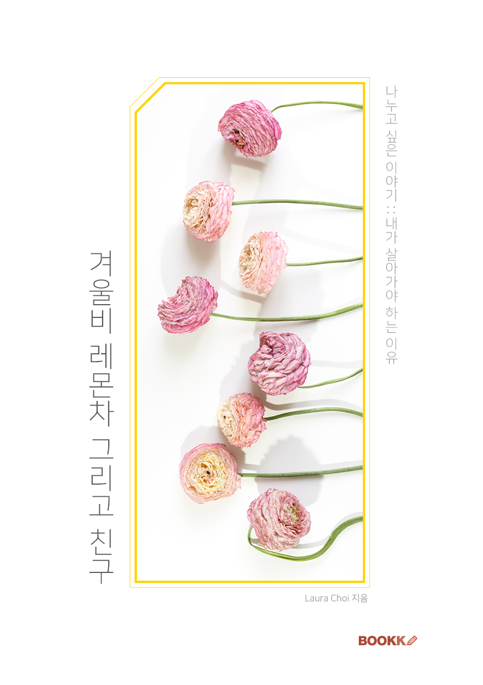

어린 시절 봄이 오는 그 경이로운 내음을 참으로 사랑했던 그 소녀는 지금도 연둣빛이 좋은
초봄의 그 내음을 간직하고 있고 또 그 희망의 내음을 많은 이들과 나누고 싶은 마음을 가
지고 있습니다.
비록 한 사람이라도 제 편지로부터 힘을
얻을 수 있다면, 그것이 제가 하는 이 일의 참 의미임을 깨닫고, 매일매일 글을,
마음을 나누고자 합니다.
2006년부터 지금까지 함께하고 있는 “나누고 싶은 이야기”의 모든 편지 친구들과 이 기쁨
을 나누고 싶습니다.
겨울비, 레몬차 그리고 친구
나누고 싶은 이야기::내가 살아가야하는 이유